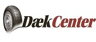

VIL DU TILBYDE DINE KUNDER EN 100% RENTEFRI KREDIT I OP TIL 12 MDR?
- Tilbyd på til 8.000 kr. garanteret kredit på under 30 sekunder
- Op til 40.000 kr. kredit, søg online.
- Uden risiko for din butik
- Til dæk/fælge eller værksteds arbejde - ja kan bruges til alt i din butik.SE MERE HER
Læs mere her:
Udfyld disse skema og send dem - så bliver I oprettet.:
- SamarbejdsaftaleSE MERE HER
- Terminalaftale - så Dækcenter kortet kan bruges I jeres DK Kort terminalSE MERE HER
- HUSK AT MED SENDE KOPI AF BILLEDLEGITIMATION (kørekort eller pas)
Sendes til: Resurs Bank
Tune Parkvej 5
4030 Tune
Att.: Allan Kristensen
Eller
Resurs Bank
Ekslingan 9, Väla Norra
SE-250 24 Helsingborg
Att.: Karina Bengtsson
Spørgsmål ? Kontakt os på info@daekcenter.nu
 – NEMT, ENKELT